is a digital publication that explains ideas debated in culture with visual essays makes cool shit on the internet. You might know us from tk pockets, but we’ve also published stories about tk vocab, tk population, and tk spelling.
So, welcome to The Pudding. Get cozy. You can explore all our stories below.

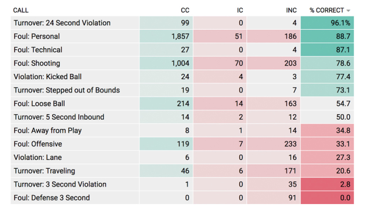
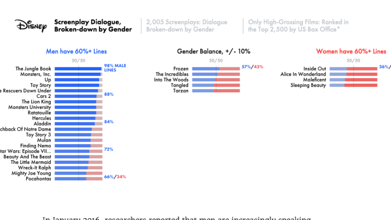


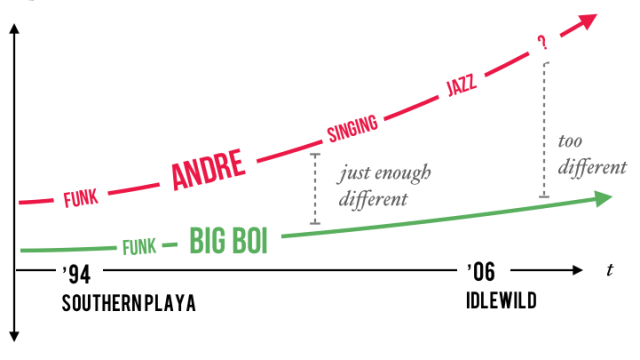
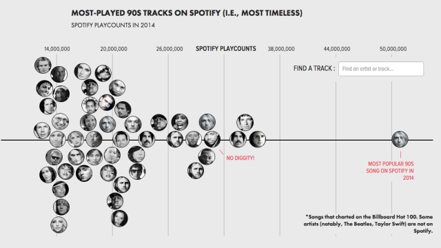
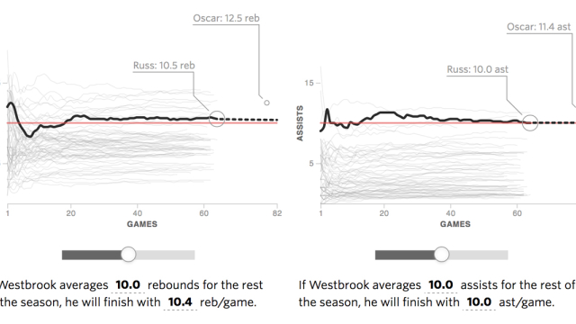
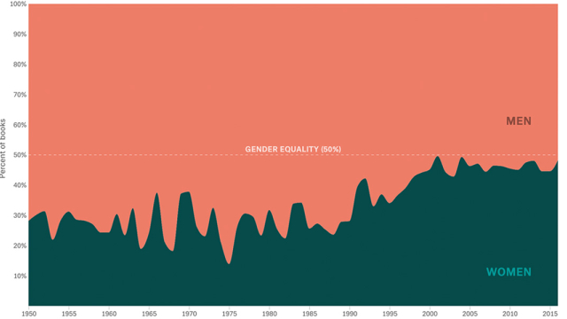
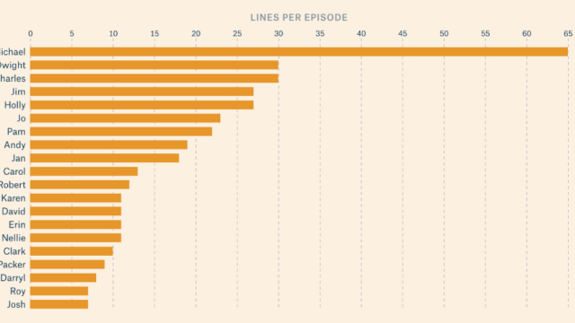

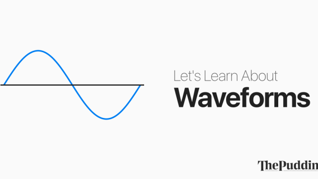
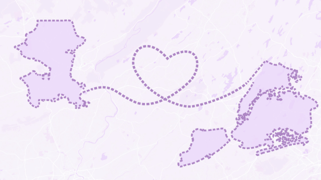

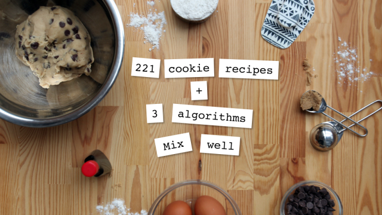
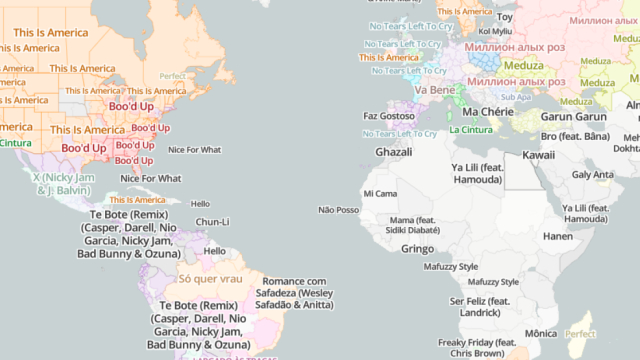
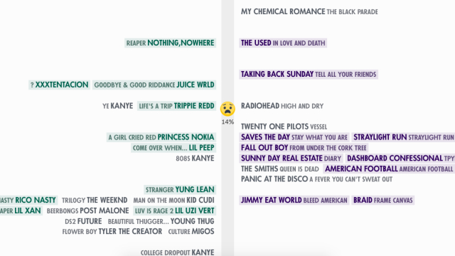
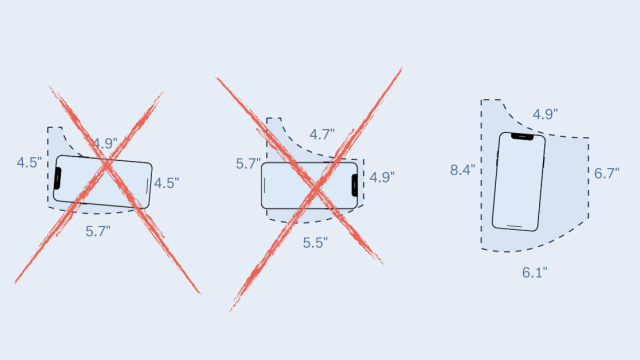


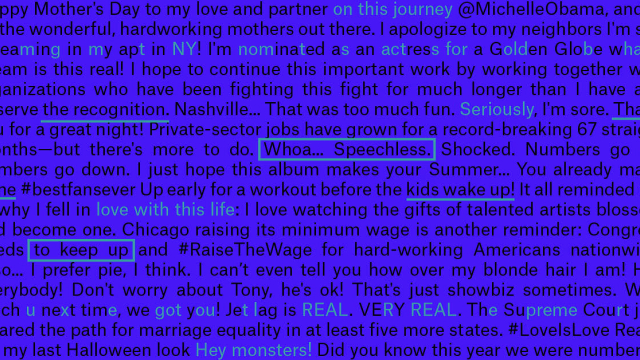
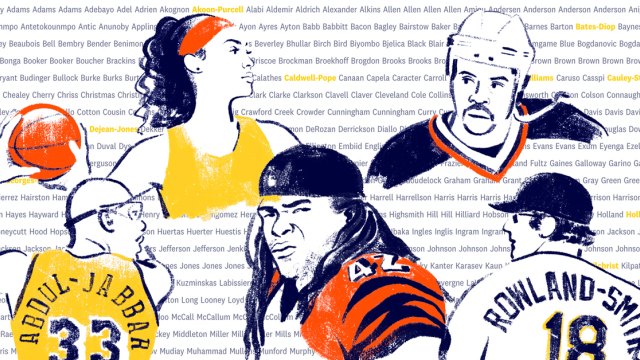

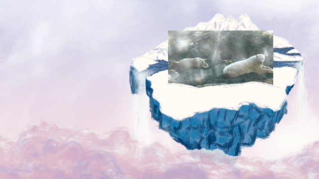


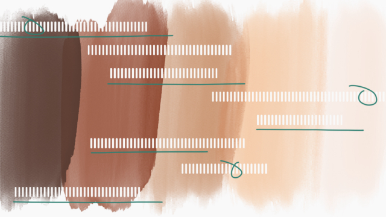


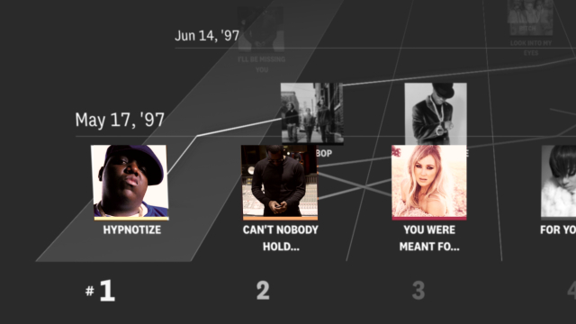